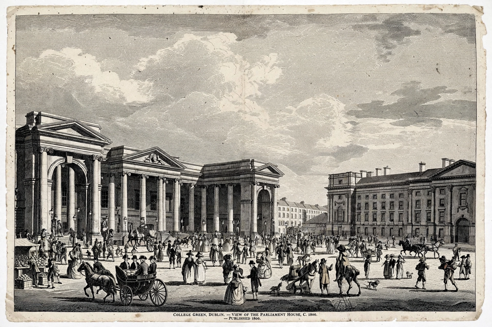

| Acts of Union 1800 | |
|---|---|
| Long title | Acts of the Parliaments of Great Britain and Ireland uniting the two kingdoms |
| Passed | 1800 |
| Effective | 1 January 1801 |
| Result | United Kingdom of Great Britain and Ireland |
| Key figures | William Pitt the Younger, Lord Castlereagh, Lord Cornwallis |
The Acts of Union 1800 were parallel acts of the Parliament of Great Britain and the Parliament of Ireland which united the Kingdom of Great Britain and the Kingdom of Ireland (previously joined only in personal union) to create the United Kingdom of Great Britain and Ireland. The acts came into force on 1 January 1801, and the merged Parliament of the United Kingdom had its first meeting on 22 January 1801.
The Irish Rebellion of 1798, supported by French landings against the backdrop of the French Revolutionary Wars, convinced Prime Minister William Pitt the Younger that a legislative union was necessary for security. An earlier attempt in 1799 had been defeated in the Irish Commons. The government of Lord Lieutenant Cornwallis and Chief Secretary Castlereagh secured passage in 1800 through extensive patronage, peerages, and compensation to borough proprietors — regarded by critics, then and since, as wholesale corruption. An informal promise of Catholic emancipation, intended to win Catholic support, was blocked by George III, prompting Pitt's resignation in 1801.
Ireland sent 100 MPs to the Westminster Commons (reduced from 300) and 32 representatives to the Lords (28 temporal, 4 spiritual). The Church of Ireland and Church of England were united as the established church. A new Union Flag combined the crosses of St George, St Andrew, and St Patrick. Ireland retained its own courts and executive administration at Dublin Castle.
The Union lasted until the Anglo-Irish Treaty and the establishment of the Irish Free State in 1922, following the Irish War of Independence; Northern Ireland remained in the United Kingdom, whose name became the United Kingdom of Great Britain and Northern Ireland in 1927. Repeal of the Union was a central aim of Irish nationalism throughout the 19th century, from Daniel O'Connell's Repeal Association to the Home Rule movement.